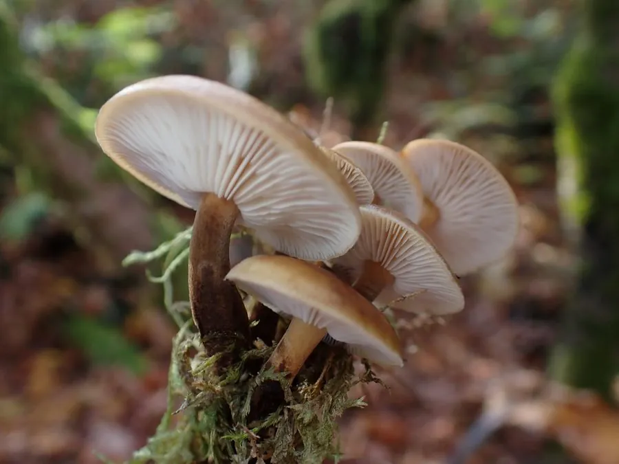

真菌 · 真菌界
金针菇 Flammulina filiformis

金针菇菌柄细长如针、菌盖小巧，口感脆嫩爽滑，是火锅与凉拌菜中的常见食用菌，已实现工厂化栽培。
- 分类
- 门担子菌门纲伞菌纲目伞菌目科膨瑚菌科属冬菇属
- 栖息环境
- 阔叶树枯木与人工栽培瓶中，喜低温阴湿环境
- 地理分布
- 原产东亚，现中国、日本、韩国等地大规模工厂化栽培
- 保护级别
- 暂无评估（栽培食用菌）
物种志
金针菇是担子菌门伞菌目的木腐真菌，子实体丛生。野生金针菇菌盖半球形，直径 2–5 cm，黄褐色至红褐色，表面黏滑；菌柄细长，长 5–15 cm，直径 0.3–0.8 cm，基部有黄褐色绒毛；菌褶白色，较稀疏；孢子印白色。工厂化栽培的金针菇因避光、高二氧化碳环境，菌盖小、菌柄长而洁白，与野生形态差别很大。
金针菇又称冬菇，野生时多生于阔叶树的枯木上，耐低温，秋冬季出菇。中国、日本、韩国都有悠久的栽培历史，如今主要采用瓶栽或袋栽的工厂化生产，在低温黑暗环境中培养出洁白细长的子实体。金针菇口感脆嫩，富含膳食纤维、多糖和多种氨基酸，尤其赖氨酸含量较高，适合涮火锅、凉拌和炒食；但其中含有的几丁质较难消化，食用时应充分咀嚼。
形态与习性
- 菌盖直径 2–5 cm，黄褐色至红褐色
- 菌柄细长，长 5–15 cm，基部有绒毛
- 菌褶白色，排列较稀疏
- 孢子印白色
- 栽培瓶栽、袋栽工厂化生产
- 采收期菌柄长至 12–15 cm 时
- 营养富含膳食纤维与赖氨酸
趣味知识
- 野生金针菇是黄褐色的，市面上的洁白细长品种是避光栽培的结果。
- 金针菇耐低温，常在冬季出菇，所以又名“冬菇”。
- 金针菇的赖氨酸含量较高，与谷物搭配食用可以互补氨基酸。